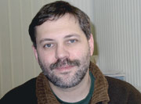
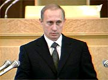

В уж не знаю почему (хотя догадываюсь) любимой «Литературной газете» недавно накрылась телеколонка. Телеколонка — это такой важный газетный жанр: еженедельная тысяча слов про телевизор. У каждой уважающей себя газеты она есть. И у любимой была. Но недавно вот сдохла.
Раньше-то её вёл Николай Журавлёв — демшизовый пенсионер, расточавший хвалы ворам и лицемерам, с которыми, увы, у хронически честного и благородного меня давно уже ассоциируется аббревиатура НТВ. Не столько, впрочем, демшизовый, сколько попросту полоумный. В конце концов Журавлёва заткнули, хотя полностью отлучить от газеты до сих пор не решаются. Гуманизм и всё такое.
Надо приглашать молодого талантливого паренька, но только где его настачишься — на Литературкины-то деньги? Всё ж украдено, поделено и пропито. Что, блин, делать с колонкой? Кто спасёт, обогреет и поведёт к счастью?
Догадайтесь с шестисот миллионов раз. Впрочем, Галина Черменская об этом ещё не знает, но я ей сегодня скажу, и она будет счастлива. Потому что на безрыбье — и говно плавает. Пользуясь тем, что не спится (сердце за НТВ болит, Дибров, козёл, разбередил на ночь глядя Дип пёрплом, плюс ёбанные взрывы на Солнце) решил я поупражняться в дискурсе. Ну чисто так, повходить в тему — вокруг да около. Поделиться накопившимся в роковые для страны дни. А уж со следующей недели и колонку прокрутить попробуем.
В чём смысл. Группа прохиндеев под названием «Союз правых сил» учредила призовой фонд для конкурса телевизионных сценариев. Конкурс будет проходить под названием «Нормальная жизнь в нормальной стране». Зацените пафос. Из эспээсовской брехни всегда прёт подсознание. Нормальный — сиречь обыкновенный, Homo vulgaris. Нормальная жизнь — это жизнь быдла. Пожрал сосисок с кислой капустой, выеб жену и баиньки. А что такое «нормальная» страна? Надо полагать, разновидность «этой». Нарубила руды для Мирового сообщества, посмотрела Телепузиков, и — спи, родимая, рано вставать. Нормальное такое говно без претензий на смысел жизни.
Руководитель оргкомитета конкурса Даниил Дондурей поясняет, что СПС «стимулирует интеллигенцию обратиться к позитивным ценностям: личному успеху, здоровому патриотизму, вере в себя и свою страну». Мало того, что бессмысленный набор слов, так ещё и редкостно идиотский.
Как личный успех соотносится с верой в страну — дело известное: см., например, здесь. Однако и эта бессмыслица меркнет рядом с идиомой «здоровый патриотизм». Великие слова, запишу себе на двери сортира. Типа «здоровый сифилис». Ещё точнее, «я — не я, и жопа не моя».
Почему когда либерально-демократические помои начинают брехать про «страну», «народ» и всё такое, тянет блевать, как от шлюхиных поцелуев? Потому что патриотизм у них «здоровый». А любовь не бывает здоровой, это дело оголтелое и интеллектуально болезное. Таким образом, копирайт на патриотизм сохраняется у шоблы, пасущейся возле газеты «Завтра». Они, по крайней мере, свой энтузиазм не рассчитывают по типу «платить налоги — это патриотизм, а служить в армии — не патриотизм». Дрыщать на Пушкинской площади — патриотизм, а замочить чеченца или убить жыда — нет.
Парадокс, товарыщщы. Почему среди леваков больше талантливых людей, чем среди либеральной прогорклой спермы — это понятно. Потому что талант есть служение, а служение требует оголтелости и самоотречения вопреки здравому смыслу. Следование «личному успеху», напротив, требует позорного здравомыслия и политкорректной сыкливости. Непонятно другое. Почему вокруг газеты «Завтра» и быдляка больше?
Углубимся в теорию. Под словом «быдляк» я понимаю субъектов безрефлексивной разновидности гона. Когда я говорю Ларисе Володимеровой, что она дура и сука, это не обидно, потому что быть дурой и сукой почётно. Но когда Даня Дорфман говорит Свете Мартынчик или Марине Константиновой, что у них климакс и ноги кривые — это уже быдлизм. Потому что, во-первых, обидно, а во-вторых — я проверял — неправда. Чувствуйте дифференс.
Когда истеричную суку Политковскую мочит Миша Леонтьев, это интеллигентно и талантливо, потому что Мише от суки Политковской ничего не нужно. Но когда этим занимается какой-то перец из «Завтра», выходит до обидного неинтеллигентно и неталантливо: сразу видно, что товарищ давно не ебался. Впрочем, не удивительно: настоящим патриотам всегда не достаёт личной жизни…
Таким образом, патриот — это всегда либо быдло, либо лицемерная сволочь. Был ли Чаадаев патриотом? Скорее, блядью. А Сталин — был. Вот в чём ёб твою мать.
Поскольку инстинкт самосохранения и обстоятельства фамильной истории не пускали меня быть за Сталина, а врождённая чистоплотность не пускала — за блядей из СПС, я пребывал в сомнении. Но недолго. Глаза светочу русской мысли открыли двое подонков с Общественного российского телевиденья: Макс Соколов и многажды любимый мною Миша.
Универсальным означающим патриотического дискурса должен быть цинизм. Цинизм — это отрефлексированное лицемерие. То есть — обеззараженное.
Думается, Мише и неискренне ступившему на проторённую им тропу Максу проплачивают нехилые бабки за гигантский объём проделываемой полезной работы. Я бы на месте Путино-абрамовича (или кто там сейчас) проплачивал. Во всяком случае, оба работают не задаром. Миша уж точно не задаром. Он пашет за кайф. И потому, когда висложопая климактеричка Политковская кричала ему: «Миша, пойдёмте, я вам покажу невыносимые страдания чеченских выблядков в русской патриотической яме», — он цынично и разумно ответил, что играет в одни ворота.
Сука-любовь к Родине не терпит присутствия на своём пути тупой дуры Истины. Да — страдания, да — пиздят наши почём зря чичей. Но нравственность состоит не в том, чтобы быть иисусиком, а в том, чтобы уметь делать выбор. Не запиздишь Жыда — Жыд запиздит тебя. Бойтесь внутреннего Жыда, товарыщщы.
А гандонке Политковской, будь она не гандонкой, а человеком, я бы посоветовал: «Езжай, Политковская, в Чечню и живи. Не в качестве журналистки из Москвы, а в качестве простой русской бабы».
Мораль. Когда мне приходилось читать студентам лекции по метакультурным аспектам геополитики, я как-то бросил неумную фразу, что, мол, Басаев — исторический чувак, потому что благодаря ему впервые за двести лет Западные технологии потерпели поражение в столкновении с параноидальной исламской ментальностью. Сказал и как хуем в противозачаточную спираль воткнулся в недоумевающе-брезгливые глаза студентов. «Блядь, — подумал тогда я. — Ведь четверть из них родом из Будённовска».
И все засмеялись, в смысле, что стало мне не по-хорошему стыдно.
Мораль номер два. Придурков не следует расстреливать, как неустанно советует Миша Вербицкий. Миша-то надеется отсидеться в Бостоне или Глазго, пока у нас тут будет решительный и беспощадный, и поэтому ему реально насрать на то, что во всяком терроре против быдла выживает исключительно быдло. Я полагаю, придурков следует удушать неброско и постепенно. По типу как американцы Мiръ удушили.
В связи с чем спрашивается, за что я люблю Путина. За то, что в его стеклянных глазенапах плещется неумолимая (ибо рефлекторная) решимость удава. Энтевешную подлянку задавили классически. Сперва встряхнули, чтобы всплыла пена. Она всплыла: клинический идиот Киселёв обеспечил продвижение во фронт-мены и хэд-лайнеры откровенных дебилов. Дебилы для начала просрали эфир (уже полтора года назад на энтеве смотреть было нечего), а потом, когда нейтрализовали Гусинского и отобрали бабки, надобные для воровства и душевного здоровья, стали паниковать и делать резкие жесты с амплитудой от «встречи с Президентом» до «настоящего »О счастливчика" с настоящим Димой Дибровым". Надобность в такой позорной телекомпании сама собою отпала.
После вчерашней аутической «акции протеста» даже Роман Лейбов вынужден был признать, что они «редкостные мудаки». А Роман Лейбов — как-никак, совесть нации, с ним не поспоришь.
Что ещё привлекает в случае энтеве-удушения. То, что это идеальный случай естественного отбора. Скажем, когда хозяева Литературки доудушат Литературку, весь местный шлак расползётся догнивать по другим газетам. А вот с энтеве (под давлением созданного властью стрёма) обратно в бизнес возьмут только достойных. Ну то есть Осокина или Миткову возьмут. И шибзика Парфёнова возьмут вместе с женой. А вот Киселя — хуюшки. И объевшуюся киселёвского говна Сорокину хуюшки, и дуру Марианну Максимовскую, и Диму Диброва, и многих еще энетевшных «профессионалов свободы». Это радует.
Что огорчает (меня как Бога), так это то, что не состоится запланированное назначение Димы Диброва ведущим аналитической программы «Итоги». Вот это жалко. От этой недостачи вселенская гармония пострадает.